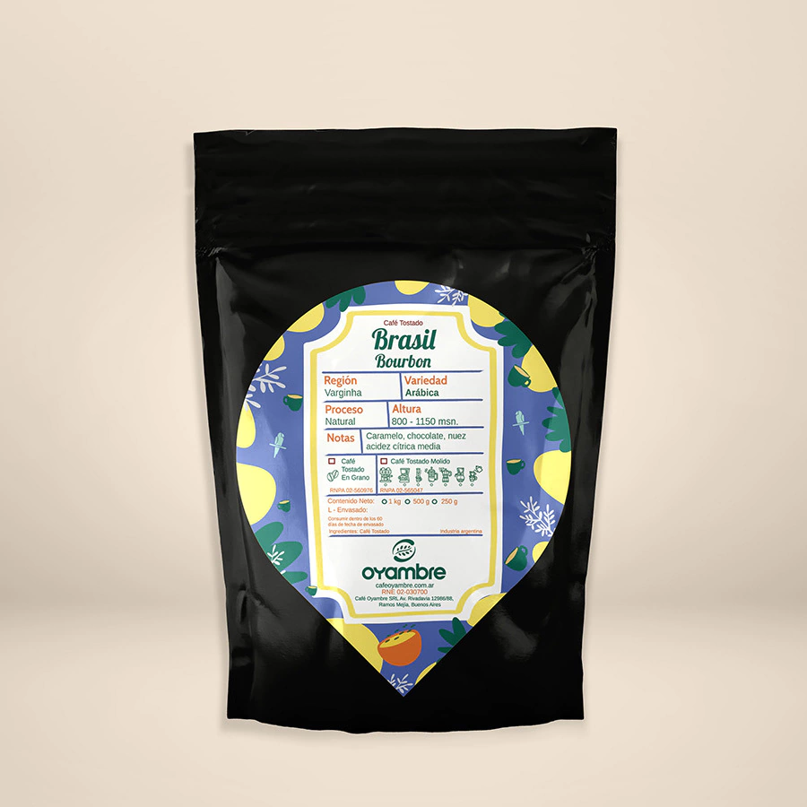
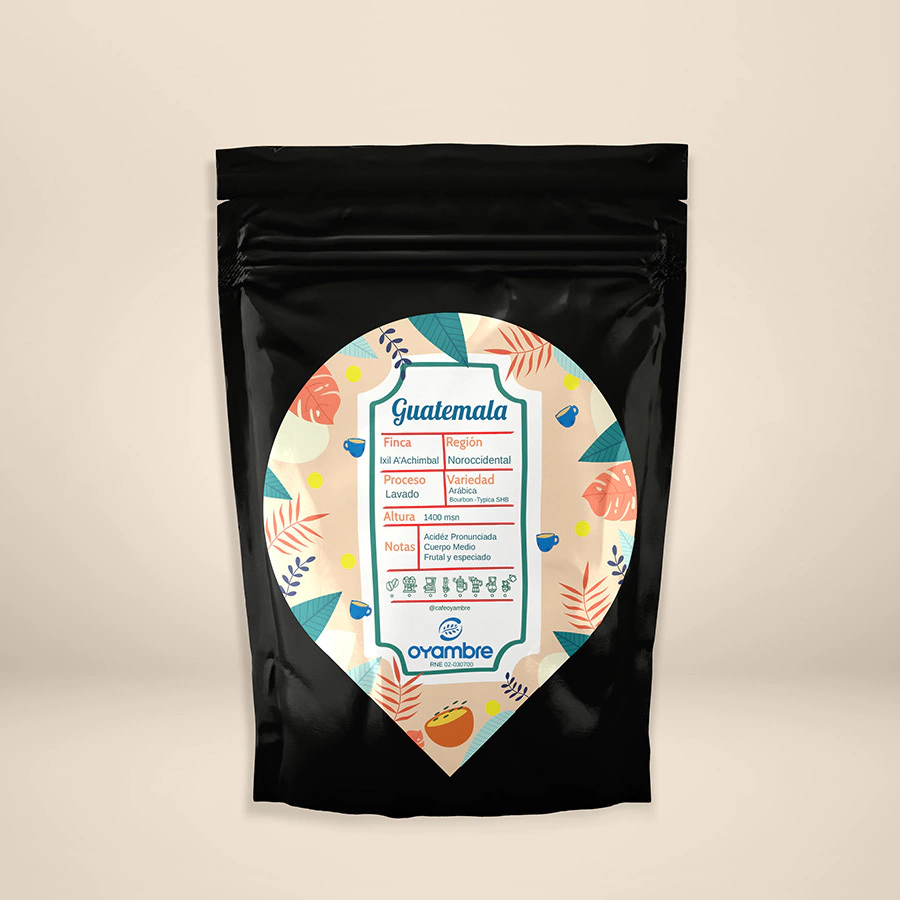

Bienvenidos a nuestra caffeteria de especialidad
Somos un grupo de jovenes emprendedores que nos reunimos para crear experiencias
Nuestra flor de myosotis es sinónimo de fidelidad y amor eterno. Busqueda de que los sueños florezcan en donde trataron de ser cortados y que se convierta en un símbolo de la memoria, de quienes no estan fisicamente pero nos acompañan desde otro plano.
Te mostramos un adelanto de la carta
Tea blends
Gracias a ©Mil Grullas autores de estos blends
AMANECE QUE NO ES POCO
Té verde con Fruta de Dragón, bayas Goji, arándanos, naranja, lemon grass, eucaliptos, remolacha, pimienta rosa y pétalos de flores multicolores.
DE CUANDO ADAN Y EVA TENIAN UN JARDIN
Té verde con trozos de manzanas, peras, frutillas y un notable bouquet de flores que incluye pétalos azules de aciano y amarillos de caléndulas, capullos de rosa roja y flores de manzanilla.
EL BESO DE KALI Y SHIVA
Té negro con trozos de manzana, pera, cubitos de piña azucarada, rosa mosqueta, hibiscus, canela y pétalos de girasol.

COMER REZAR AMAR
Té negro de la India, cáscaras de naranja y manzana, pistachos y almendras europeas y un toque especiado de pimienta roja, semillas de comino y coriandro de Indonesia.

Café Especialidad
Gracias a ©Oyambre por acompañarnos con los mejores granos.
Café de Brasil Santos Bourbon
Sabor exquisito, fina calidad, y aspecto cremoso, está elaborado con los granos más selectos de Brasil.
Café de Especialidad Guatemala
Café de acidez pronunciada y brillante que se acentúa y dulcifica con el paso de los minutos. Cuerpo medio, con sutiles notas frutales y moderadas especias.
Café de Especialidad Colombia Guanes Genuino
Cacao Maduro, Caramelo y Cítricos. Acidez Media Cítrica. Cuerpo medio/bajo y persistencia delicada..
Café de Especialidad Colombia orgánico
El grano es el de mayor tamaño, con coloraciones características que lo tornan inconfundible para el conocedor. Tostado es un café lleno de aromas intensos.
Delicatessen
Gracias a ©María Adriano, la greadora de estos exquisitos sabores
Invierno

Halloween

Color explosion

Veranitos

Clorofila
Croissant cloud

Toast ciabatta

Avocado toast

Reserva tu lugar para la gran inauguración
Estan todos invitados a celebrar con nosotros la apertura de este nuevo proyecto
Sera el proximo sabado 30 de Septiembre a las 18hs